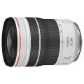

器材库 > 35mm画幅AF变焦镜头 > RF 70-200/4 L IS USM

详细规格
镜头类型
远摄变焦镜头
发布日期
2020-11-04
焦距
70mm-200mm
最大光圈
f/4
最小光圈
f/32
视角（对角）
34° - 12°
镜头结构
16片/11组
低/超低色散镜片
4片
光圈叶片
9片
最近对焦距离
60cm
最大放大倍率
约0.28倍
驱动马达
NANO USM超声波马达
滤镜口径
77mm
镜头卡口
Canon RF
防抖
是
颜色
白色
尺寸
83.5×119mm
重量
695g
备注
ASC镀膜
幽o兰2020-11-21 11:004.75 分
操作性 5.00耐用性 4.50性价比 4.50解像力 5.00色彩还原 5.00机械结构 4.50
产品图 / 样片
RF 70-200/4 L IS USM
评测 / 相关文章
- 详细内容 （原站已下线）
- ［资讯］佳能RF70-200mm F4 L IS USM镜头图赏 （原站已下线）
- ［资讯］佳能RF 70-200/4 L IS USM官方样片欣赏 （原站已下线）
相关文章
- ［资讯］佳能RF70-200mm F4 L IS USM镜头图赏 （原站已下线）
- ［资讯］佳能发布RF70-200mm F4 L IS USM （原站已下线）
- ［资讯］佳能RF 70-200/4 L IS USM官方样片欣赏 （原站已下线）